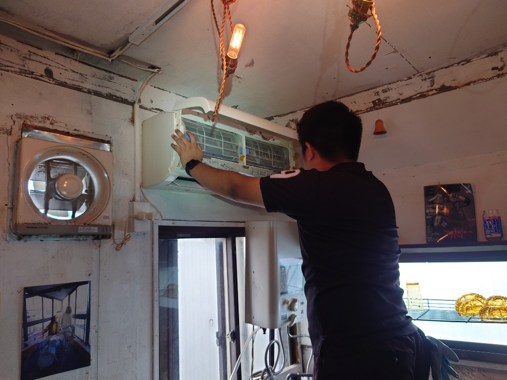
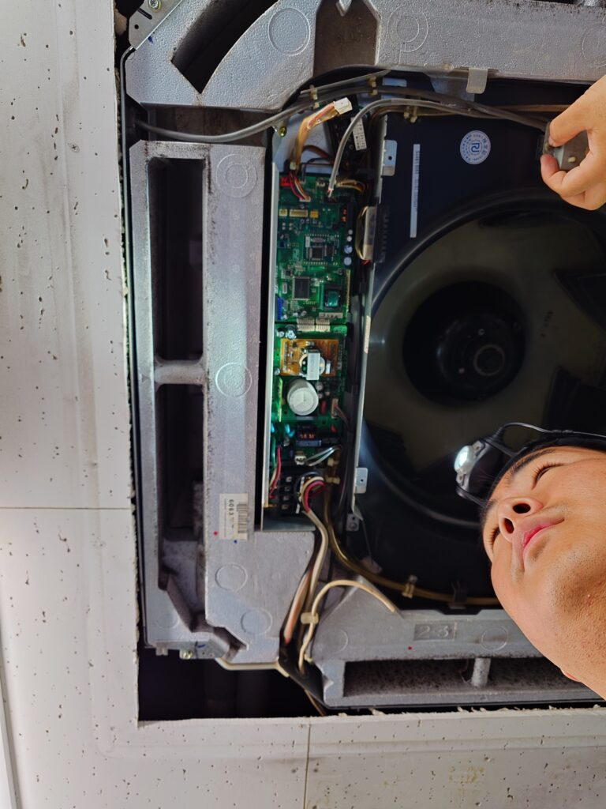
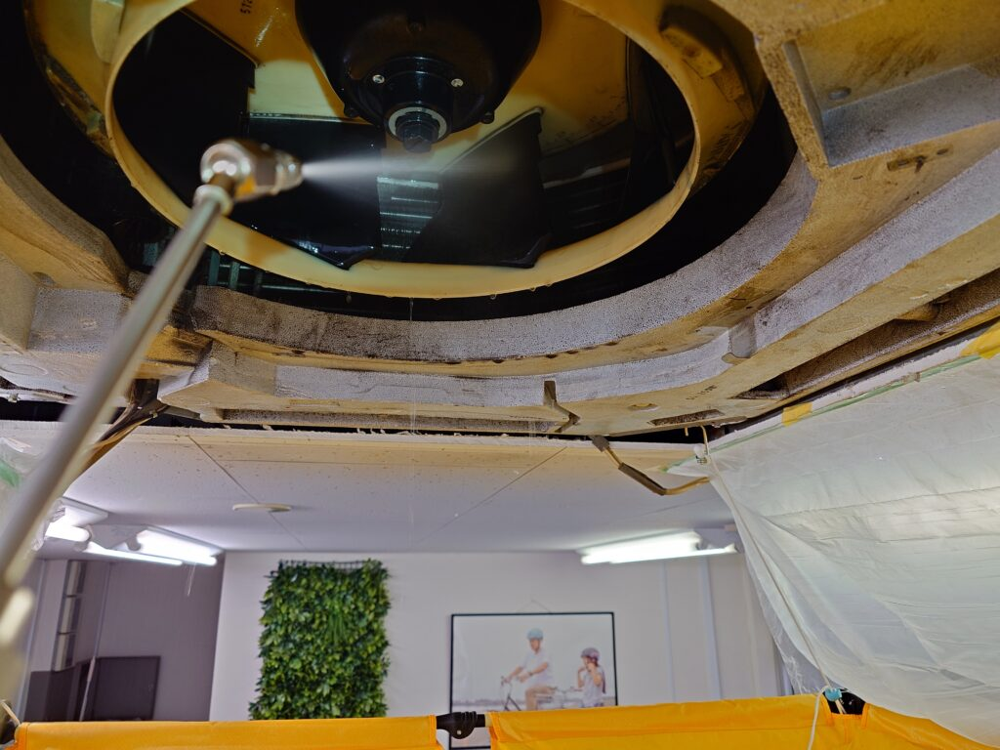
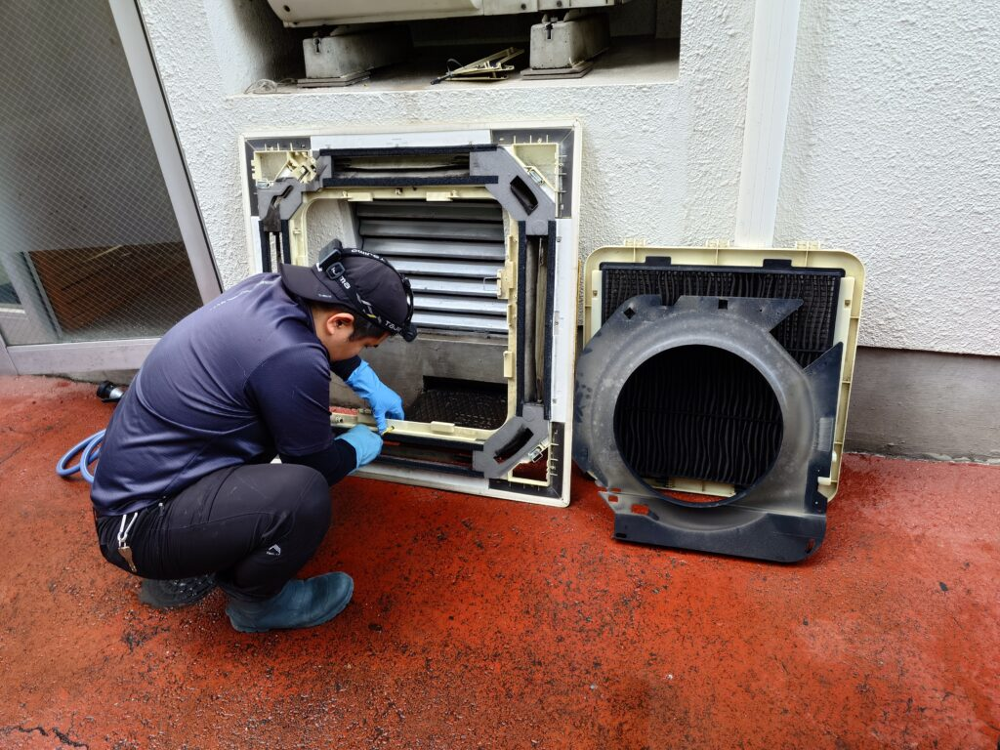
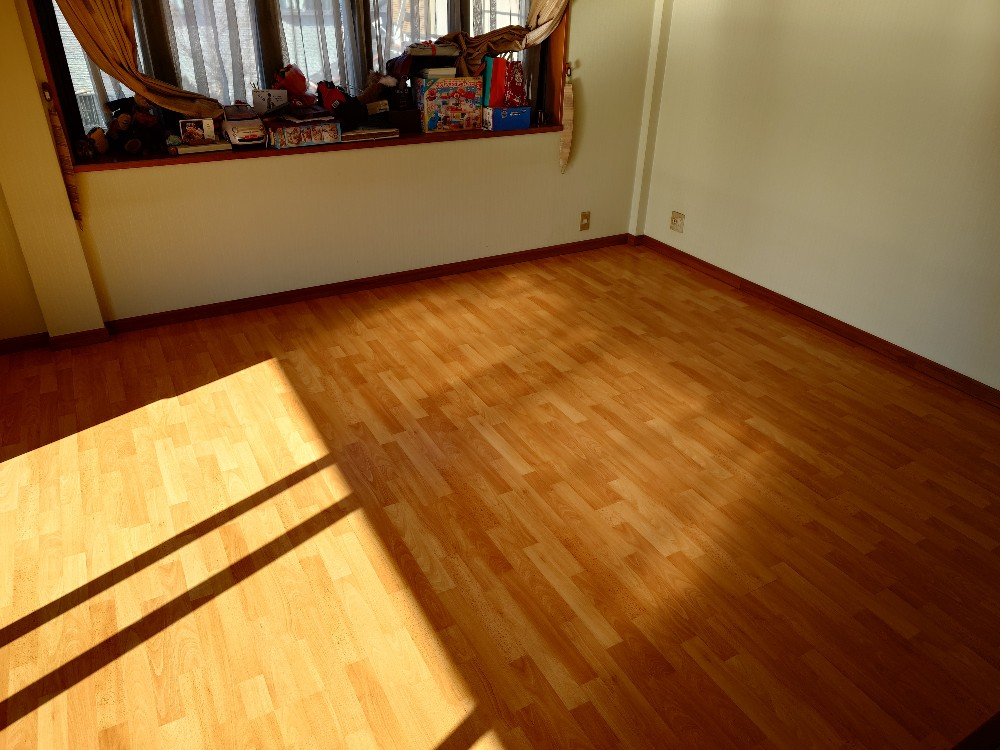

あなたの街にOPENしました!港区白金台DAIZENのツイてるエアコンクリーニング！
DAIZENのプロフェッショナルエアコンクリーニングを、関東地区（東京 千葉 神奈川 埼玉）中部地区（愛知 岐阜 三重）関西地区（大阪 京都 兵庫 奈良 和歌山）で実施します!オール完全分解洗浄クリーニングで隅々までエアコンをパーフェクトにクリーニングします!■壁掛けノーマルタイプ5,900円/1台 お掃除機能タイプ10,900円/1台 ぜひお問い合わせ下さい、宜しくお願いいたします!




